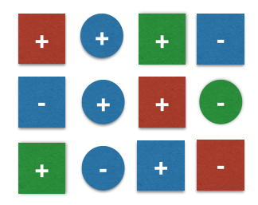
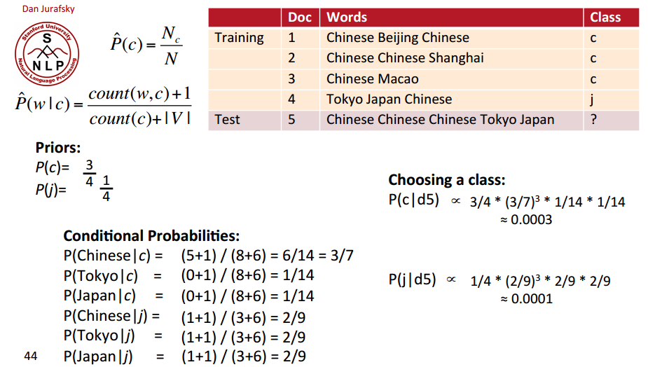

Machine Learning Tutorial (V) Naive Bayes and Text Classification
(Ray) Shirui Lu
Bayes Rule in A1 (from Lec04)
- Recall \(E\) in MAP:
- \(E(\tilde{w}) = L(\tilde{w}) + \frac{\lambda}{2}\tilde{w}^T\tilde{w}\)
- convert \(E\) back to probabilities by taking \(exp(-E)\):
- \(exp(-E(\tilde{w})) = exp(-L(\tilde{w}) - \frac{\lambda}{2}\tilde{w}^T\tilde{w})\)
\(= exp(-L(\tilde{w}))exp(-\frac{\lambda}{2}\tilde{w}^T\tilde{w})\)
\(= \Pi_{i=1}^N P(t_i|x_i)exp(-\frac{\lambda}{2}\tilde{w}^T\tilde{w})\)
Bayes Rule in A1 (from Lec04)
- \(exp(-\frac{\lambda}{2}\tilde{w}^T\tilde{w})\) is proportional to a Gaussian probability density function (PDF):
- We can write this as \(p(\tilde{w}) \propto exp(-\frac{\lambda}{2}\tilde{w}^T\tilde{w})\)
- Minimizing \(E\) is equivalent to maximzing:
- \(\Pi_{i=1}^N P(t_i|x_i)p(\tilde{w})\)
Bayes Rule in A1 (from Lec04)
- Take a look back at Baye's rule
- \(p(\theta|D) = \frac{p(D|\theta)p(\theta)}{p(D)} \propto p(D|\theta)p(\theta)\)
- prior \((p(\theta))\): how likely \(\theta\) is before observing data.
- likelihood \((p(D|\theta))\): how likely the data set \(D\) is if the model parameter is \(\theta\).
- posterior \((p(\theta|D))\): how likely \(\theta\) is after observing the data set \(D\).
- Estimating the \(\theta\) (learning the model) by maximizing the posterior distribution is called maximum a posteriori (MAP) estimation.
The Problem of Text Classification
Positive or negative movie review?[Dan Jurafsky]
- Unbelievably disappointing.
- This is the greatest screwball comedy ever filmed.
- It was pathetic. The worst part about it was the boxing scenes.
Classification Methods: Supervised Machine Learning
- Input:
- a document \(d\).
- a fixed set of classes \(C = {c_1, c_2,\ldots, c_j}\)
- a training set of \(m\) hand-labeled documents \((d_1,c_1),\ldots,(d_m,c_m)\)
- Output:
- a learned classifier \(\gamma: d \rightarrow c\)
The Bag of words model
- Idea: Represent a text document as a feature vector in order to use machine learning methods.
- vocabulary: the set of all different feature words that occur in training set, with a count of how it occurs.
- ignore the order
- occurance is independent (naive Bayes): "hello" tends to be followed by a "world"
Example of Bag of words model
- Documents:
- D1: "Unbelievably disappointing."
- D2: "This is the greatest screwball comedy ever filmed."
- D3: "It was pathetic. The worst part about it was the boxing scenes."
- D4: "Greatest film ever."
- Vocabulary
- V = {disappointing: 1, greatest: 2, pathetic: 1, worst: 1}
A Toy Example [Sebastian Raschka]

- (Training) Dataset
- 12 samples, 2 different classes +,-.
- 2 features: color, geometrical shape.
- Denote
- \(c_j\) be class labels: \(c_j=+\) for +, \(c_j=-\) for -.
- \(x_j\) be the 2-dimensional feature vectors: \(x_j = [x_{j1} x_{j2}], x_{j1} \in \{blue, green, red, yellow\}, x_{j2} \in \{circle, square\}\)
Classify a new sample
- New Sample
- features \(x=[blue, square]\)
- class? (ground truth: +)
- decision rule
- (MAP) \(P(c=+ | x=[blue, square]) \ge P(c=- | x=[blue, square]) ? + : -;\)
Classify a new sample
- computing
- (prior) \(P(+) = \frac{7}{12} = 0.58, P(-) = \frac{5}{12} = 0.42\)
- (likelihood, +) \(P(x | +) = P(blue | +) \cdot P(square | +) = \frac{3}{7} \cdot \frac{5}{7} = 0.31\) (i.i.d.)
- (likelihood, -) \(P(x | -) = P(blue | -) \cdot P(square | -) = \frac{3}{5} \cdot \frac{3}{5} = 0.36\) (i.i.d.)
- (posterior, + ) \(P( + | x) \propto P(x | + ) \cdot P(+) = 0.31 \cdot 0.58 = 0.18\)
- (posterior, -) \(P(- | x) \propto P(x | -) \cdot P(-) = 0.36 \cdot 0.42 = 0.15\)
Classify a new sample
- computing
- (prior) \(P(+) = \frac{7}{12} = 0.58, P(-) = \frac{5}{12} = 0.42\)
- (likelihood, +) \(P(x | +) = P(blue | +) \cdot P(square | +) = \frac{3}{7} \cdot \frac{5}{7} = 0.31\) (i.i.d.)
- (likelihood, -) \(P(x | -) = P(blue | -) \cdot P(square | -) = \frac{3}{5} \cdot \frac{3}{5} = 0.36\) (i.i.d.)
- (posterior, + ) \(P( + | x) \propto P(x | + ) \cdot P(+) = 0.31 \cdot 0.58 = 0.18\)
- (posterior, -) \(P(- | x) \propto P(x | -) \cdot P(-) = 0.36 \cdot 0.42 = 0.15\)
- on dropping \(p(x)\)
- \(p(x)\) is called evidence
- no effect on the final result
- classification
- \(P(+ | x) \ge P(- | x)\), so classfied as +.
A trickier case
- New Sample
- features \(x=[yellow, square]\)
- likelihood \(P(x | +) = P(yellow | +) \cdot P(square | +) = 0 \cdot \frac{5}{7} = 0\) ?
- Laplace (add-1) smoothing
- \(\hat{P}(x_i | c)\)
- \(= \frac{count(x_i, c) + 1}{\Sigma_{x \in V}(count(x, c) + 1)}\)
- \(= \frac{count(x_i, c) + 1}{\Sigma_{x \in V}count(x, c) + |V|}\)
Summarize and apply to Text Classification
- (training set) feature extraction (bag of words)
- Naive Bayes and Language Modeling
- prior (class)
- likelihood (i.i.d., laplace smoothing)
- drop the evidence term
- compute posterior
- apply decision rule
A Worked Example [Dan Jurafsky]
